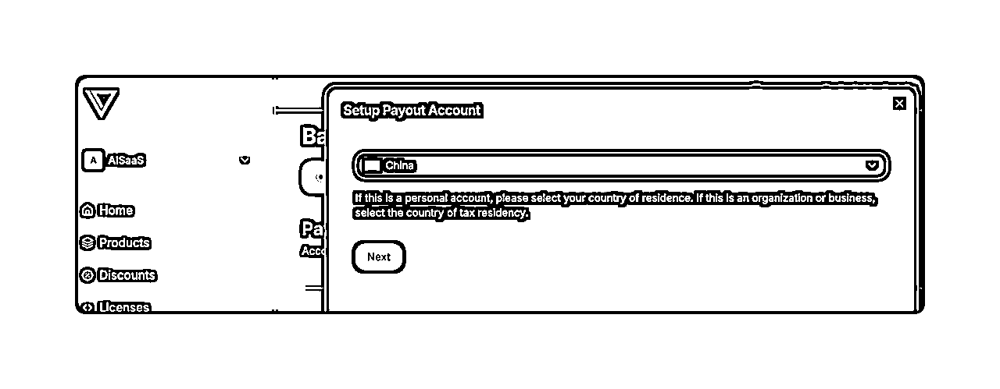

来源：https://ewtk6agpo4c.feishu.cn/docx/EiFEdIjdqo5a2sxecjpcYBS5nRh
网站出海赚美金是每一个出海人在做的事儿，赚美金，我们把工具做好了，尤其是一次性支付或者订阅的这种工具，就需要有一种支付工具帮助我们“收款美金”，常见的stripe需要办理港卡，且封控严格，新手极不友好；PayPal的话电商确实常见，只是必须需要公司，对于独立个体也不方便，这时候Creem出现了！
这几个在一起，“如果是真的”，那很王炸啊！
第一次看到creem支付是在这篇文章 海外支付平台Creem注册教程
当时的说法是，这个支付只需要20分钟就能搞定，我信了，注册到审核确实只要20分钟，但是后面的操作，让作为0基础小白的我崩溃了。经过了2周的爱恨纠结，终于还是把这个creem给装完了了，，3月底接完了支付也写了这篇文章的80%，但是还是拖到了5月中才真正把creem的支付给“拿下”，今天就用小白的视角帮大家一起梳理接creem支付的每一个步骤。
文章主要包含四个部分：
直通车，可以直接google登录 或者邮箱注册，注册成功就会进入下面的页面
在Balance的Payout Account中，选择创建一个新的账号，国家选择China，

主要填写你的基本信息和你的产品是做什么的

请按照下面的流程，完成个人信息填写，上传大陆身份证的正反面，并且电脑摄像头拍照，最终你的个人信息会被保存到Sumsub ID中。


提交完以后，你可能会看到：
莫慌，等待即可，大概过了24小时，就会邮件通知 审核通过！
当然 你也有可能是 直接通过的那种

点击Payout Details的Manage Payout Account，完善提现信息。
填写提现账号的国家，选择China，币种选择CNY，转账方式选择支付宝。
接着填写支付宝的账号，邮箱地址和全名（中文名）。

最后填写你的家庭地址，这里如实填写即可。提交之后，个人信息和提现信息就完善好了。

最后就是等待审核，快的话，半天到一天就可以结果。
测试环境和生产环境的配置信息不一样！
这个非常的重要！当初我跟彩笺都忽略了“test mode”这个东西！
打开和关掉，是完全的2套内容，所以下面所有的东西，都要做2遍。
一个是 test mode一个是非test mode

首先是注册产品
product--->add product


name：产品名字
return url：用户在支付完成以后，你希望对方返回的页面
description：产品介绍（可以让ai生成啦～）
status：选择active（激活状态）
image preview:产品图，可以上传，可以不上传

支付方式：你是一次性支付（single payment）还是 订阅类型（subscrition）的支付
curency：货币方式
price:自定义价格
tax category：一般选择“digital goods or service”（虚拟服务）
tax behaviour：是否包含税（看个人情况选择

图片、特性、其他...
这些内容都能让ai搞定
填写完成以后 点击“create product”
在product页面 自己创建的产品 有三个点，点击以后 可以复制自己的product id
点击右上角的 developer就创建自己的api key
记得创建2组，test和非test的 这是2个不同的
直通车
Webhook 可以理解为一个网络通知器"。
想象你在等快递，有两种方式知道快递到了：

以下情况你可能需要 Webhook：
如果你的网站不需要这些实时性或自动化的功能，可能就不需要 Webhook。
如果细心的朋友会发现，刚刚在创建api key的时候 旁边就有一个 webhooks

点击add webhook只需要填写两个信息
webhook name：取个名字，这个通知器是通知什么的
webhook url：这个地方的url是指，在支付完成以后，creem需要向哪一个page传达通知。
那这个url具体要怎么填写呢？
www.XXXX.com/payment/result
按理说应该是
http://localhost:3000/payment/result
但是 你填进去 就得到通知，不能使用本地的路径，必须使用公开的URL。所以这个时候你就需要一个新的东西ngrok。
具体看下一个part的具体实操
经过ngrok的操作以后，本地连接就会变成一个可以用的public url
https://8733-191-204-177-89.sa.ngrok.io/payment/result
创建完成以后 获取 webhook的URL

ngrok 是一个非常实用的网络工具，它的主要作用是帮助我们实现"内网穿透"，开发者可以让其他人实时查看本地开发的网站
ngrok
可以google直接登录，点击菜单栏的 “your authtoken”，查看并复制你的token
brew install ngrok
也可以直接点击“download”进行下载，选择对应的芯片
添加 authtoken到电脑上，终端运行下面内容
ngrok config add-authtoken 你的token
启动本地开发服务，终端运行下面👇
npm start
运行ngrok，一般程序在3000端口，如果你的有指定修改端口即可
ngrok http 3000
运行完以后会出现 类似下面的图，就得到了local的path对应的public URL

最后再把我们需要的具体path换进去例如
localhost:3000/payment/result
Public URL就是
https://08f7-115-196-182-99.ngrok-free.app/payment/result
免费版本的，每一次 run ngrok以后 都会生成一个随机的url。
如果你关闭了terminal以后，再次打开，就会生成另外一个URL，你就需要去creem里面更换mode 模式下的 webhook的URL！
经过以上种种 ，我们应该就得到了下面的所有东西
env文件
CREEM_API_KEY= CREEM_PRODUCT_ID= CREEM_API_URL=https://api.creem.io CREEM_SUCCESS_URL=
CREEM_API_KEY= CREEM_API_KEY_TEST=
CREEM_PRODUCT_ID= CREEM_PRODUCT_ID_TEST=
这个好像是通用的
CREEM_API_URL=https://api.creem.io CREEM_API_URL_TEST=https://test-api.creem.io
CREEM_WEBHOOK_URL_test= CREEM_WEBHOOK_URL= CREEM_WEBHOOK_secret_test= CREEM_WEBHOOK_secret=
CREEM_SUCCESS_URL= CREEM_SUCCESS_URL_TEST=
我让ai给我画了一个说明的流程图，结果感觉画的非常复杂，看起来可能真的这么复杂，简单来说就是，
大概就是这么个意思～（主打一个看图说话
网站的支付就2种，一次性（pay one-time）&订阅（subscribe），下面就手把手把带大家尝试一下 一次性付费。
配置规则文档直通车
一句话说逻辑就是：配置规则在这里，我有这些配置信息，我希望实现什么效果，你帮我写
划重点“配置信息”、“配置规则”、“实现效果”
就是这3个内容，配置信息上面我们已经搞定，接下来就是配置规则和实现效果
先确定我们这一次的实现效果
⚠️整个操作，不涉及用户注册和登录，所以也挺容易实现的，别害怕，即使是后面有注册和登录，也都有第三方集成，莫慌！
这个实现逻辑，我们是需要有一个使用参数`success_url`和`signature验证`直接看到对应文档官方解释
划重点：付款成功，重定向的自定义页面，使用信息验证付款（和用户）
一次性付费总共需要3个API：创建checkout、生成signature、验证signature
const redirectUrl = await axios.post(
`https://api.creem.io/v1/checkouts`,
{
"success_url": "https://example.com",
"product_id": "prod_your-product-id",
},
{
headers: { "x-api-key": `creem_123456789` },
},
);
看起来吓人，实际上就4个东西：
我的文件如下：
import axios from 'axios';
export interface CreateCheckoutParams {
productId: string;
requestId?: string;
successUrl?: string;
}
export interface CreateCheckoutResponse {
checkout_url: string;
[key: string]: any;
}
/**
* 创建Creem结账会话
* @param params 结账参数
* @returns 包含结账URL的响应
*/
export async function createCheckout(params: CreateCheckoutParams): Promise {
try {
const API_URL = process.env.CREEM_API_URL || 'https://test-api.creem.io';
const API_KEY = process.env.CREEM_API_KEY || 'creem_test_3sioDtbY5ADbmoODbQnNiW';
// 获取格式化的API基础URL（确保没有尾部斜杠）
const baseUrl = API_URL.endsWith('/') ? API_URL.slice(0, -1) : API_URL;
const apiUrl = `${baseUrl}/v1/checkouts`;
const response = await axios.post(
apiUrl,
{
product_id: params.productId,
request_id: params.requestId,
success_url: params.successUrl,
},
{
headers: { 'x-api-key': API_KEY },
}
);
if (!response.data || !response.data.checkout_url) {
throw new Error('API response does not contain checkout_url');
}
return response.data;
} catch (error) {
console.error('Error creating checkout session:', error);
if (axios.isAxiosError(error) && error.response) {
console.error('API error response:', error.response.data);
}
throw error;
}
}
(GPT的解读，下面的你也可以发给任意ai去看看写的到底是什么)
import crypto from 'crypto'; /** * 生成Creem签名 * @param params 参数对象 * @param apiKey API密钥 * @returns 生成的签名 */ export function generateSignature(params: Record, apiKey: string): string { // 创建格式为 "key1=value1|key2=value2|...|salt=apiKey" 的数据字符串 // 重要：不要对键进行排序 - 按照提供的顺序使用 const data = Object.entries(params) .map(([key, value]) => `${key}=${value}`) .concat(`salt=${apiKey}`) .join('|'); // 使用SHA-256哈希算法生成签名 const hash = crypto.createHash('sha256').update(data).digest('hex'); return hash; }
import { generateSignature } from './signatureUtils';
export interface RedirectParams {
request_id?: string | null;
checkout_id?: string | null;
order_id?: string | null;
customer_id?: string | null;
subscription_id?: string | null;
product_id?: string | null;
}
/**
* 验证Creem签名
* @param params 重定向参数
* @param signature 要验证的签名
* @returns 签名是否有效
*/
export function verifySignature(params: Record, signature: string): boolean {
try {
const API_KEY = process.env.CREEM_API_KEY || 'creem_test_3sioDtbY5ADbmoODbQnNiW';
// 过滤掉null/undefined值，并移除signature参数（如果存在）
const filteredParams: Record = {};
Object.entries(params).forEach(([key, value]) => {
if (value !== null && value !== undefined && key !== 'signature') {
filteredParams[key] = value;
}
});
// 使用Creem提供的方法生成签名
const computedSignature = generateSignature(filteredParams, API_KEY);
// 比较计算的签名与接收到的签名
return computedSignature === signature;
} catch (error) {
console.error('Error verifying signature:', error);
return false;
}
}
测试支付时使用测试信用卡
卡号
4242 4242 4242 4242
其他信息都可以随便填写
完成了以上所有的，也完成了测试模式的支付以后，准备实际检查一下，生产环境的真实支付了，请一定要做以下事情，不然荷包真的会痛！
这个1000元的货币单位竟然是“欧元”！请注意，不是美元，是欧元。我跟彩笺都踩了这个坑，一开始我的产品设置的就是美元，自己给自己付了9.9以后发现扣了手续费！后来仔细看，越看越不对劲儿，这个符号，就是欧元符号吧！
在菜单页，有一个非常明显的discount按钮，这里可以自己创建优惠券，最高是100%的折扣，也就是免费使用！
免费使用！
在林悦己给自己的支付测试冲了5次9.9美刀以后，在大哥的提醒下，发现并使用了这玩意儿，一开始我还只是设置90%，结果大哥自己测试的时候，直接上了100%（我？）
有了这个折扣券，在支付的时候甚至不需要输入银行卡信息，只需要输入discount的code就会显示FREE！
在大哥的提醒下，我又无意中点进了我的payment，想着，是不是可以退款（refund），还真给我找到了，点击order最右边的三个点，就会有一个“refund”按钮，2分钟内完成退款
（如果是立刻支付，信用卡还没入账的情况，写这个帖子的时候，我有4笔9.9是几天前的，还没退给我）
前提：这次实战，只专注在如何接支付的api，关于“登录”、“数据库”等部分不会详细说明（后面我也准备再写一篇接支付的）
点击按钮，触发支付，完成支付，返回指定的成功页面，creem后台查看钱是否收到


为了节省cursor的次数，我使用augment作为演示（还没有用上augment的朋友可以看我之前那篇augment，现在还能薅羊毛，越早上车越好）！
支付流程 ├── 1. 用户点击支付按钮 (app/page.tsx) │ └── 生成唯一requestId │ ├── 2. 前端调用API (app/api/create-checkout/route.ts) │ └── 调用createCheckout服务 │ └── services/creem/createCheckout.ts │ ├── 使用环境变量获取API配置 │ ├── 调用Creem API创建结账会话 │ └── 返回checkout_url │ ├── 3. 用户被重定向到Creem支付页面 │ ├── 4. 支付完成后，Creem重定向回success页面 │ ├── URL包含支付结果参数和签名 │ └── app/success/page.tsx (服务端组件) │ └── app/success/client.tsx (客户端包装器) │ └── components/SuccessContent.tsx │ ├── 从URL获取参数 │ ├── 调用verifySignature验证签名 │ │ └── services/creem/verifySignature.ts │ │ ├── 过滤参数 │ │ └── 调用generateSignature生成签名 │ │ └── services/creem/signatureUtils.ts │ │ ├── 按照Creem规则格式化参数 │ │ ├── 添加API密钥作为salt │ │ └── 使用SHA-256生成哈希 │ └── 根据验证结果显示成功或失败页面
我需要接入creem，在service下面，帮我封装creem的api接口，api一共有3个，分别是 “createCheckout”、“signatureUtils”、“verifySignature” 关于这三个的参考文件我已经放到readme里面，你可以参考学习，环境变量我已经准备好了 代码写完以后 请测试最后的验证signature，成功以后处理首页按钮的调用
写好md文件，发出prompt，就开始自己工作了

如果你遇到了 verify失败，就是下面这种情况
就让ai检查verify的代码和参考代码的区别，严格按照参考代码进行修改：
一开始不懂，真的是很正常的，不懂就硬上！崩溃100次以后，就进入下一个阶段了！
支付、登录真的是2座可怕的大山，这篇内容其实在3月底的时候我就写好了，一直想加一个实操演练，结果就拖到了现在。
面对这个自己害怕的东西，搞明白支付到底怎么接，api还有service之间的关系到底是怎样，似懂非懂等于不懂，完全懂，完全明白，完全掌握，才算真正克服了这座大山。借老师的那句话，今天，我终于把支付这颗珠子 给扔掉了！
希望这篇内容能帮助到需要接支付的你，如果接入成功，欢迎回来留言喔！